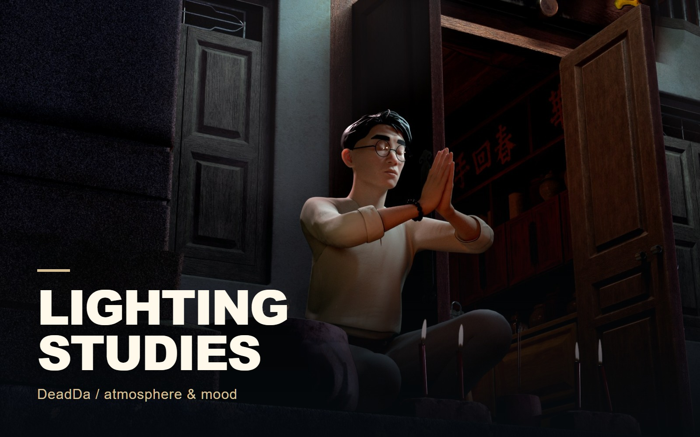

Lighting
Lighting Studies
Changing the feeling of a scene.

THE PROJECT
Character-scene lighting studies ranging from restrained night tones to a warm, dramatic close-up.
- MY CONTRIBUTION / FOCUS
- Lighting studies
Lighting examples from the supplied portfolio folder.
PROCESS & DESIGN
Changing the scene through light.
The two seated views allow a direct comparison of scene illumination. The close-up uses warm light and a tighter framing for a different mood.
Controlled comparison
The seated views keep the scene similar while changing the illumination around the character and doorway.
A closer mood
The warm close-up changes both the framing and the light, making the face the dominant element.
01 / Lighting Studies
Lighting comparison
Compare the illumination of the seated character and the doorway in these two scene views.
02 / Lighting Studies
Warm close-up
A tighter camera and warm light shift the attention toward the facial expression.